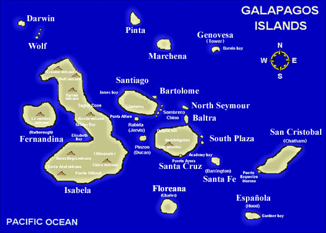

<!--
  Generated template for the InsularPage page.

  See http://ionicframework.com/docs/components/#navigation for more info on
  Ionic pages and navigation.
-->
<ion-header>

  <ion-navbar>
    <ion-title>Región Insular o Galápagos</ion-title>
  </ion-navbar>

</ion-header>


<ion-content padding>

  
  <div class="container">
    <div class="row">
      <div class="col-2">

      </div>
      <div class="col">
        <ion-grid>
          <ion-row>
              <ion-card *ngFor="let gala of gal" (click)="reproducir(gala)">
                <!--<h2>{{anfibios.titulo}}</h2>-->
                
                <!--<div class="card-title"><ion-icon name="play" *ngIf="!gala.reproduciendo"item-right=""></ion-icon></div>-->
                <!--<div class="card-subtitle"><ion-icon name="pause" *ngIf="gala.reproduciendo"item-right=""></ion-icon></div>-->
              </ion-card>
          </ion-row>
        </ion-grid>

      </div>
      <div class="col-2">

      </div>
    </div>
  </div>

</ion-content>
